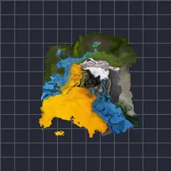

紊流位移

以平滑的碎形雜訊推動圖層，可做出火焰、水波、熱浪扭曲或粗糙自然的邊緣。
設定
| 設定項目 | 類型 | 範圍 | 預設值 |
|---|---|---|---|
| 視差 | 點（X, Y） | -5000 px 至 5000 px | 0 px, 0 px |
| 位移 | 點（X, Y） | -5000 px 至 5000 px | 0 px, 0 px |
| 強度 | 數字 | 0 至 2.5 | 0.25 |
| 演變 | 數字 | -50 至 50 | 0 |
| 方向 | 選項 | 兩者、水平、垂直、放射狀、扭轉 | 兩者 |
| 縮放 | 數字 | 0.01 至 50 | 1 |
| 拉伸 | 點（X, Y） | 0.01 至 10 | 1, 1 |
| 種子 | 數字 | 0 至 5 | 0 |
| 疊代層數 | 數字 | 1 至 9 | 6 |
| 偏移量 | 數字 | -1 至 1 | 0 |